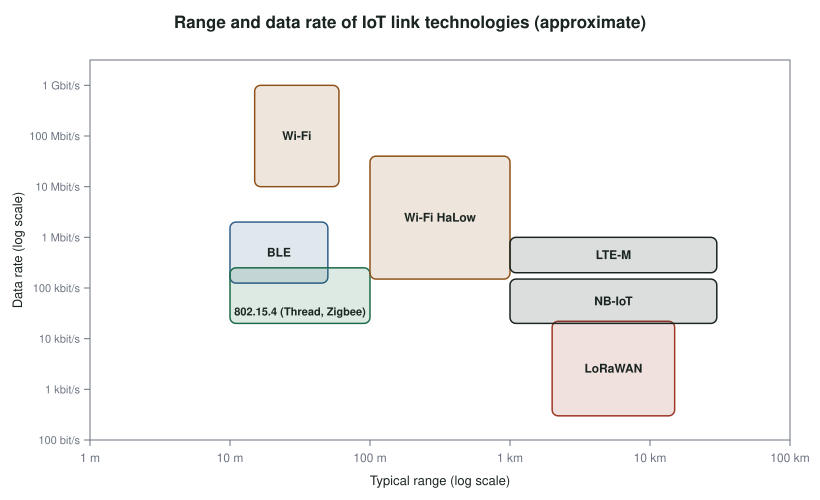

10 The Link Layer: Short and Long Range
After this chapter you should be able to:
- Explain why the link layer dominates an IoT device’s energy budget, and estimate battery life from a duty cycle.
- Use the ESP32’s sleep modes to reduce power consumption.
- Describe IEEE 802.15.4 and the protocols built on it, and compare star, mesh and cluster-tree topologies.
- Describe Bluetooth Classic and Bluetooth Low Energy, including advertising and the GATT data model.
- Describe Wi-Fi’s role in IoT, including ESP-NOW and Wi-Fi HaLow.
- Compare long-range options (LoRa and LoRaWAN, cellular IoT) and wired time-sensitive networking.
- Choose a link technology for a given application from its range, data rate, power and cost.
10.1 Why it matters
The link layer is where an IoT device meets the physical world of radio waves and wires, and it is usually where most of the device’s energy goes. Transmitting a packet over Wi-Fi can take more energy than a full second of computation; repairing lost transmissions with retries can account for most of the energy spent on communication.
There is no single best link technology. A wireless earbud, a smart lock, a soil sensor on a farm and a robot on a factory floor need very different combinations of range, data rate, latency, power and cost. This chapter surveys the main options and gives you a framework for choosing among them.
10.2 Concepts
What IoT asks of the link layer
Four groups of characteristics shape the choice of link technology (Rayes and Salam 2022):
- Device characteristics. How much energy the device has, and how much processing and memory it can spend on the radio stack. For many devices, communication costs more energy than everything else combined, so low-power radios are essential.
- Traffic characteristics. Some devices send short, occasional bursts (a door sensor); others send continuous streams (a camera). Some applications tolerate loss and delay (weather monitoring); others need guaranteed, bounded latency (engine control). The same device can face different requirements in different applications.
- Access characteristics. Wired or wireless, mobile or stationary, short range or long range.
- Scalability characteristics. Whether to build your own network (Wi-Fi, Zigbee, LoRa) or rent one (cellular), and whether to use a star topology, where every device talks to a central hub, or a mesh, where devices relay each other’s traffic. Meshes extend coverage but add forwarding delay, and they converge more slowly as they grow.
Energy and duty cycling
The ESP32 illustrates how much a radio costs and how sleep modes save it. Approximate figures for the ESP32 chip are (ESP32 Series Datasheet, n.d.):
| Mode | What is running | Approximate current |
|---|---|---|
| Active, Wi-Fi transmitting | CPU and radio | 160–260 mA |
| Active, receiving or listening | CPU and radio | 80–90 mA |
| Modem sleep | CPU on, radio off between beacons | ≈ 3–20 mA |
| Light sleep | CPU paused (clock-gated), RAM kept | ≈ 0.8 mA |
| Deep sleep | Only the RTC domain and its memory | ≈ 10 µA |
| Hibernation | Only an RTC timer | ≈ 2.5 µA |
Light sleep uses clock gating: the clock is stopped to most of the chip, so its logic stops switching and stops consuming dynamic power, but its state is preserved. Deep sleep powers down the CPU, most of the RAM and the digital peripherals, leaving only the real-time-clock (RTC) controller, its peripherals and a small RTC memory. Waking from deep sleep is like a reset: setup() runs again. Variables marked RTC_DATA_ATTR survive.
RTC_DATA_ATTR uint32_t bootCount = 0; // kept in RTC memory across deep sleep
void setup() {
Serial.begin(115200);
bootCount++;
Serial.printf("Boot #%lu: measure, transmit, sleep\n", bootCount);
// ... read the sensor and send the reading here ...
esp_sleep_enable_timer_wakeup(60ULL * 1000000ULL); // wake in 60 s
esp_deep_sleep_start(); // never returns
}
void loop() {} // never reachedBattery life follows from the average current:
\[ \text{battery life} = \frac{\text{capacity}}{I_{avg}},\qquad I_{avg} = \sum_i I_i \cdot \frac{t_i}{T} \]
For a 1 300 mAh battery:
- Always active at 250 mA: 1 300 / 250 ≈ 5.2 hours.
- Modem sleep, active 50 ms of every second at 250 mA and in modem sleep (10 mA) the rest: \(I_{avg} = 250 \times 0.05 + 10 \times 0.95 = 22\) mA, so about 59 hours.
- Hibernation, active 4 ms of every second at 250 mA and hibernating at 2.5 µA the rest: \(I_{avg} \approx 1.0\) mA, so roughly 54 days.
The lesson is that battery life is set almost entirely by how long the radio is on. Sending less often, sending less data, and reconnecting quickly matter far more than optimizing code.
IEEE 802.15.4: low-rate personal area networks
IEEE 802.15.4 defines the physical and MAC layers for low-rate wireless personal area networks: low cost, low power and low data rate, with battery lives of months to years. Its main features are:
- operation in unlicensed bands: 868 MHz (Europe, one channel), 902–928 MHz (North America) and 2.4 GHz worldwide (16 channels at 250 kbit/s);
- ranges from tens of meters indoors to around a kilometer outdoors with line of sight;
- acknowledged frames for reliability, with frames of at most 127 bytes.
802.15.4 is the foundation for several complete stacks: Zigbee (widely used in lighting and home automation), Thread (an IPv6-based mesh used by Matter, Chapter 13), WirelessHART and ISA100.11a (industrial), and 6LoWPAN (Chapter 11).
An 802.15.4 network has three kinds of device:
- a coordinator, the most capable node and the root of the network, which chooses the channel, assigns the network identifier and allocates addresses;
- routers, which relay traffic and buffer messages for sleeping devices;
- end devices, which know only enough to talk to their parent and can sleep most of the time.
These devices can be arranged in three topologies:
| Topology | Description | Strengths | Weaknesses | Typical use |
|---|---|---|---|---|
| Star | All devices talk to one coordinator | Simple and cheap; end devices can sleep | Single point of failure; range limited to one hop | Smart home, peripherals, health monitors |
| Mesh | Any device can relay for any other within range | Self-organizing and self-healing; multipath reliability | Forwarding delay; routers must stay awake | Agriculture, environmental monitoring, building automation |
| Cluster-tree | Hierarchical mesh; routers connect only through parents | Covers large areas with simple routing | Longer latency; less redundancy | Large sensor deployments |
The TSCH (time-slotted channel hopping) mode, introduced in IEEE 802.15.4e, synchronizes all nodes to a shared schedule of time slots, and changes radio channel on every slot. Synchronization lets nodes sleep until their slot, which saves energy; channel hopping means interference on one frequency only affects some transmissions, which improves reliability. TSCH is the basis of deterministic low-power industrial networks.
Bluetooth
Bluetooth (originally IEEE 802.15.1, now maintained by the Bluetooth SIG) operates in the 2.4 GHz band between 2 402 and 2 480 MHz. It uses frequency hopping: devices change channel up to 1 600 times per second, which reduces the impact of interference from Wi-Fi, microwave ovens and other devices sharing the band.
Bluetooth Classic (BR/EDR) organizes devices into piconets: one central device (historically called the master) and up to seven active peripherals that share its clock and hopping sequence. Piconets can be linked into larger scatternets. Classic Bluetooth suits continuous streams such as audio, but discovery and connection maintenance keep the radio busy, which limits battery life.
Bluetooth Low Energy (BLE), introduced in Bluetooth 4.0, is a separate, much simpler protocol designed for low power. Its main concepts are:
- Advertising. A device broadcasts short packets on three dedicated channels to announce itself. Beacons do nothing else; many sensors simply put their readings in their advertisements.
- Connections. A central device (such as a phone) can connect to a peripheral. Both then wake only at agreed connection intervals, typically every 7.5 ms to 4 s, and sleep in between.
- GATT. Connected devices exchange data through the Generic Attribute Profile. A peripheral exposes services, each containing characteristics (values with properties such as read, write and notify). Services and characteristics are identified by UUIDs; standard ones, such as the Heart Rate service, have short 16-bit UUIDs defined by the Bluetooth SIG.
Later versions added features important for IoT: Bluetooth 5 introduced a 2 Mbit/s mode and a long-range coded PHY; Bluetooth Mesh supports many-to-many networks; and Bluetooth 5.1 and later added direction finding and, more recently, channel sounding for distance measurement.
The original ESP32 supports Bluetooth 4.2, both Classic and BLE. A minimal BLE peripheral that exposes the potentiometer as a readable, notifying characteristic looks like this:
#include <BLEDevice.h>
#include <BLEServer.h>
#include <BLE2902.h>
#include "iot_pins.h"
#define SERVICE_UUID "6e400001-b5a3-f393-e0a9-e50e24dcca9e" // example custom UUIDs
#define POT_UUID "6e400002-b5a3-f393-e0a9-e50e24dcca9e"
BLECharacteristic* potChar;
void setup() {
BLEDevice::init("IoT-Kit");
BLEServer* server = BLEDevice::createServer();
BLEService* service = server->createService(SERVICE_UUID);
potChar = service->createCharacteristic(
POT_UUID, BLECharacteristic::PROPERTY_READ | BLECharacteristic::PROPERTY_NOTIFY);
potChar->addDescriptor(new BLE2902()); // lets clients enable notifications
service->start();
BLEDevice::getAdvertising()->addServiceUUID(SERVICE_UUID);
BLEDevice::startAdvertising();
}
void loop() {
uint16_t value = analogRead(IoTPins::POT_ADC);
potChar->setValue(value); // 2 bytes, little-endian
potChar->notify();
delay(500);
}A generic BLE explorer app on a phone (such as nRF Connect) can now discover the kit, connect and subscribe to the value. Lab 4 builds a BLE step counter on this foundation.
Wi-Fi
Wi-Fi (IEEE 802.11) offers high data rates and uses infrastructure that already exists in most buildings, which makes it the most common link for IoT devices with mains power (IoT Analytics 2025). Its drawbacks for battery-powered devices are high transmit power, the time needed to associate and obtain an address, and the need to wake regularly to hear the access point’s beacons.
Two variants address some of these drawbacks:
- ESP-NOW is a connectionless protocol from Espressif that sends short packets (up to 250 bytes) directly between ESP devices using the Wi-Fi radio, with no access point. It supports encrypted and unencrypted peers and delivery callbacks. It is ideal for simple device-to-device control, such as a remote button that switches a light, but it is proprietary and limited to a small number of encrypted peers.
- Wi-Fi HaLow (IEEE 802.11ah) moves Wi-Fi to the sub-GHz bands (902–928 MHz in the US) for longer range (around 1 km outdoors) and better penetration through walls. It supports thousands of stations per access point, longer sleep periods and smaller headers, with data rates from about 150 kbit/s to tens of Mbit/s.
Newer mainstream Wi-Fi standards also help IoT: Wi-Fi 6 (802.11ax) adds target wake time, which lets a device negotiate when it will next wake, so it can sleep through beacons.
Long range: LPWANs
Low-power wide-area networks (LPWANs) trade data rate for range and battery life. They can reach several kilometers in cities and further in open country, with batteries lasting years, but they carry only a few bytes per message and a limited number of messages per day.
LoRa and LoRaWAN
LoRa is a radio modulation (the physical layer) developed by Semtech. It uses chirp spread spectrum: each symbol is a frequency sweep, which can be decoded even below the noise floor. Its key parameter is the spreading factor (SF7 to SF12). Each step up roughly doubles the time on air and adds range; SF7 at 125 kHz bandwidth carries about 5.5 kbit/s, while SF12 carries under 300 bit/s. In North America LoRa uses the 902–928 MHz band (US915), and in Europe the 863–870 MHz band (EU868), where regulations limit each device to a small duty cycle.
LoRaWAN is the MAC and network protocol built on LoRa, maintained by the LoRa Alliance (LoRaWAN Specification, n.d.). Its main features are:
- a star-of-stars topology: end devices transmit to any gateways in range; gateways are simple bridges that forward everything to a network server, which removes duplicates, manages devices and routes data to application servers. The intelligence is in the server, so devices stay simple;
- device classes that trade latency for energy: Class A devices listen only briefly after each uplink (lowest power); Class B devices also open scheduled receive windows; Class C devices listen continuously (mains-powered actuators);
- adaptive data rate, which picks the fastest spreading factor that reliably reaches a gateway;
- built-in security, with separate network and application session keys derived when a device joins (typically over the air, with OTAA).
The kit’s RFM95W module (Semtech SX1276) speaks raw LoRa. Without a LoRaWAN network, two kits can talk directly, point to point:
#include <SPI.h>
#include <LoRa.h> // arduino-LoRa library
#include "iot_pins.h"
void setup() {
Serial.begin(115200);
LoRa.setPins(IoTPins::LORA_CS, IoTPins::LORA_RST, IoTPins::LORA_G0);
if (!LoRa.begin(915E6)) { // US915 band
Serial.println("LoRa init failed: check wiring");
while (true) delay(1000);
}
LoRa.setSpreadingFactor(7);
LoRa.setSyncWord(0x34); // pick a team-specific value to avoid crosstalk
}
void loop() {
LoRa.beginPacket();
LoRa.print("beacon team-07 ");
LoRa.print(millis() / 1000);
LoRa.endPacket(); // blocks until sent
int size = LoRa.parsePacket(); // anything received?
if (size) {
String msg;
while (LoRa.available()) msg += (char)LoRa.read();
Serial.printf("RX '%s' RSSI %d dBm SNR %.1f dB\n",
msg.c_str(), LoRa.packetRssi(), LoRa.packetSnr());
}
delay(5000);
}Cellular IoT
Cellular networks offer wide coverage without building infrastructure, at the cost of a subscription and higher module prices. Two standards are designed for IoT:
- LTE-M (LTE Cat-M1): up to about 1 Mbit/s, supports mobility and voice, suited to trackers and wearables.
- NB-IoT (narrowband IoT): tens of kbit/s, excellent building penetration, very low power, suited to static meters and sensors.
Both support power saving mode (PSM) and extended discontinuous reception (eDRX), which let a device sleep for hours while remaining registered. Many older devices rely on 2G and 3G networks, which carriers are shutting down; new designs should use LTE-M, NB-IoT or 5G variants such as RedCap.
Other LPWANs
Sigfox offered an ultra-narrowband network with a very small daily message allowance, and is now operated by UnaBiz. Other options include Wi-SUN (used by utilities for smart meters), Wireless M-Bus (metering in Europe) and mioty.
Wired: time-sensitive networking
Not every IoT link is wireless. Factories and vehicles use Ethernet extended with IEEE Time-Sensitive Networking (TSN) standards. TSN combines:
- precise time synchronization (IEEE 802.1AS, a profile of the Precision Time Protocol) to better than a microsecond;
- scheduled and shaped forwarding (for example IEEE 802.1Qbv and 802.1Qav), so that time-critical traffic gets guaranteed, bounded latency even on links shared with video or file transfers;
- stream reservation and redundant paths (IEEE 802.1CB) for reliability.
Targets in industrial automation reported in the literature (Rayes and Salam 2022) are on the order of microseconds of latency within a machine cell and around 100 µs across a factory.
Choosing a link technology
Figure 10.1 places the main options by range and data rate.

| Technology | Typical range | Data rate | Power | Topology | Infrastructure |
|---|---|---|---|---|---|
| BLE | 10–50 m | 0.125–2 Mbit/s | Very low | Star, mesh | Phone or gateway |
| Zigbee / Thread (802.15.4) | 10–100 m per hop | 250 kbit/s | Very low | Mesh | Hub or border router |
| Wi-Fi | 30–50 m indoors | 10–1000+ Mbit/s | High | Star | Access point |
| Wi-Fi HaLow | up to ≈ 1 km | 0.15–80 Mbit/s | Low–medium | Star | HaLow access point |
| LoRaWAN | 2–15 km | 0.3–22 kbit/s | Very low | Star of stars | Gateways (own or community) |
| NB-IoT / LTE-M | Cellular coverage | 20 kbit/s–1 Mbit/s | Low | Star | Carrier, subscription |
| Ethernet + TSN | 100 m per segment | 100 Mbit/s–10 Gbit/s | Mains | Switched | Wired network |
This exercise corresponds to the LoRa lecture activity and uses Stage 4 of the kit build.
- Agree on a sync word with a partner team and run the beacon sketch on both kits. Print each received message with its RSSI and SNR.
- Walk one kit away from the other, down a corridor and through a door. At what RSSI and SNR do packets start to be lost?
- Change the spreading factor from 7 to 10 on both kits. How do range and time on air change? Measure time on air with
micros()aroundendPacket(). - Turn the beacon into an emergency beacon: pressing a button sends an alert that the other kit shows on its OLED and announces with the buzzer.
- Estimate battery life for a beacon that wakes from deep sleep once per minute, sends one SF7 packet and goes back to sleep.
A guided, step-by-step version for a lecture session is Activity 6.
10.3 In depth (optional)
Link budgets and time on air
Free-space path loss. In free space, received power falls with the square of distance and with the square of frequency (for fixed-gain antennas). In decibels, with \(d\) in metres and \(f\) in hertz,
\[ \text{FSPL} = 20\log_{10} d + 20\log_{10} f - 147.55\ \text{dB}. \]
At 915 MHz the loss over 1 km is \(60 + 179.2 - 147.6 \approx 91.7\) dB; at 2.4 GHz it is about 8.4 dB more. Real environments lose more, and a log-distance model captures it with an exponent \(n\) (2 in free space, roughly 2.7–3.5 in towns, 4–6 indoors through walls):
\[ PL(d) = PL(d_0) + 10\,n \log_{10}\frac{d}{d_0}. \]
The link budget. A link works if
\[ P_\text{tx} + G_\text{tx} + G_\text{rx} - PL - L_\text{misc} \ge S_\text{rx}, \]
where \(S_\text{rx}\) is the receiver sensitivity. For an SX1276 at 14 dBm with unity-gain antennas, sensitivity is roughly −123 dBm at SF7 and −137 dBm at SF12 (125 kHz). The difference between transmit power and sensitivity, the maximum coupling loss, is 137 dB at SF7 and 151 dB at SF12. Every 6 dB of extra budget doubles the free-space range; with \(n = 3\), it multiplies range by \(10^{6/30} \approx 1.6\).
LoRa time on air. A chirp spread-spectrum symbol at spreading factor SF and bandwidth BW lasts \(T_s = 2^{SF}/BW\). Semtech’s formula for the number of payload symbols, for a payload of PL bytes, coding rate \(4/(4+CR)\), CRC on (\(\text{CRC} = 1\)), explicit header (\(IH = 0\)) and low-data-rate optimization off (\(DE = 0\)), is
\[ n_\text{payload} = 8 + \max\left(\left\lceil \frac{8PL - 4SF + 28 + 16\,\text{CRC} - 20\,IH}{4\,(SF - 2DE)} \right\rceil (CR + 4),\ 0\right), \]
and the preamble of \(n_p\) symbols adds \((n_p + 4.25)\,T_s\).
For Activity 6’s 23-byte beacon at SF7, BW 125 kHz, CR = 1 (4/5) and an 8-symbol preamble: \(T_s = 1.024\) ms; the fraction is \(200/28 = 7.14\), rounded up to 8, times 5 gives 40, so \(n_\text{payload} = 48\). Time on air is \((12.25 + 48) \times 1.024 \approx 62\) ms. At SF12, \(T_s = 32.8\) ms, low-data-rate optimization becomes mandatory (\(DE = 1\)), and the same packet takes about 1.5 s: the range costs airtime, and airtime costs energy and channel capacity.
Duty-cycle arithmetic. In Europe’s 868 MHz bands many sub-bands limit each device to 1% of the time: 36 s per hour, or about 580 of these SF7 packets but only about 24 at SF12. North American rules for 902–928 MHz instead limit the dwell time on a channel (400 ms for many configurations), which an SF12 packet of this size already exceeds.
Exercise. Two kits are 300 m apart in a town (\(n = 3\), \(PL(1\,\text{m}) = 31.7\) dB at 915 MHz). Is SF7 enough? What margin do you have?
Sources for this section: (Friis 1946; SX1276/77/78/79 Datasheet: 137 MHz to 1020 MHz Low Power Long Range Transceiver, n.d.; LoRa Modem Designer’s Guide (AN1200.13) 2013).
10.4 Design trade-offs
| Decision | Considerations |
|---|---|
| Range vs. data rate vs. power | You can usually have two of the three |
| Own network vs. carrier network | Building your own avoids subscription fees but requires deploying and maintaining gateways |
| Star vs. mesh | Stars are simple and let end devices sleep; meshes extend coverage but need always-on routers |
| Licensed vs. unlicensed spectrum | Licensed (cellular) bands are managed and predictable; unlicensed bands are free but shared |
| Standard vs. proprietary | Standards (BLE, Thread, LoRaWAN) bring interoperability; proprietary protocols (ESP-NOW) can be simpler but lock you in |
10.5 Common pitfalls
- Estimating battery life from the chip’s datasheet only. Regulators, USB bridges, LEDs and sensors on the board often draw more than the chip in deep sleep.
- Ignoring retransmissions. Lost packets cost energy twice.
- Using a European LoRa frequency in the US, or vice versa. Hardware and frequency plans are regional.
- Exceeding duty-cycle or dwell-time limits in unlicensed bands, which can make a device illegal to operate.
- Operating a LoRa module without an antenna. It can damage the transmitter.
- Relying on 2G/3G modules in new designs.
- Testing radios only on a desk. Walls, people, metal and other radios change everything.
Link budget. A link works if transmit power plus antenna gains, minus path loss, exceeds the receiver’s sensitivity by a margin. With free-space path loss \(\text{FSPL(dB)} = 20\log_{10}(d) + 20\log_{10}(f) - 147.55\) (meters and hertz), compute the free-space range of a 915 MHz LoRa link with +14 dBm transmit power, 0 dBi antennas and −130 dBm sensitivity. Then explain why real-world range is far shorter.
LoRaWAN on campus. Community networks such as The Things Network provide free LoRaWAN gateways in many cities. Register a device, join it over the air with OTAA, and compare the effort and the result with the point-to-point exercise above. What do you gain from the network server?
Coexistence. Wi-Fi channel 1, BLE advertising channels and Thread channel 11 all overlap near 2.4 GHz. Design a test that measures BLE packet loss while a nearby laptop streams video over Wi-Fi, and propose mitigations.
10.6 Check your understanding
- Why is the link layer often responsible for most of an IoT device’s energy use?
- A device draws 200 mA for 100 ms every 10 s and 20 µA the rest of the time. What is its average current, and how long will a 2 000 mAh battery last?
- What is preserved in ESP32 deep sleep, and how does the program resume?
- Name the three device roles in an 802.15.4 network and what each does.
- What advantages does TSCH bring to 802.15.4?
- What are BLE services and characteristics? How does a phone receive updates from a characteristic without polling it?
- Why is LoRaWAN called a “star of stars”? Where is the intelligence?
- Choose a link technology for: (a) a water meter in a basement; (b) a wireless light switch in an apartment; (c) a livestock tracker on a ranch; (d) a security camera. Justify each.
10.7 Further reading
- A. Rayes and S. Salam (Rayes and Salam 2022), on link-layer requirements and technologies.
- Espressif, ESP-IDF Sleep Modes documentation (Espressif Systems, n.d.).
- K. Townsend et al., Getting Started with Bluetooth Low Energy (Townsend et al. 2014).
- LoRa Alliance, LoRaWAN Specification (LoRaWAN Specification, n.d.).